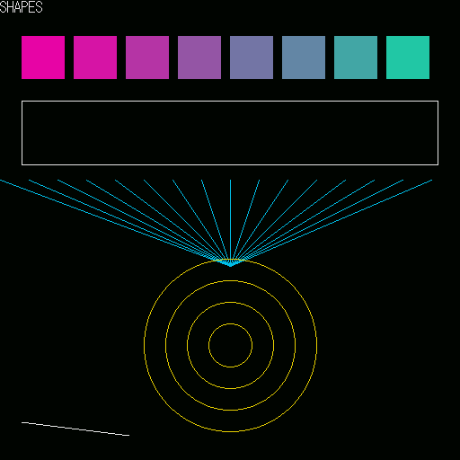
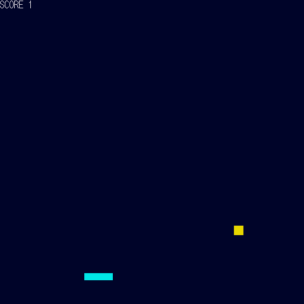
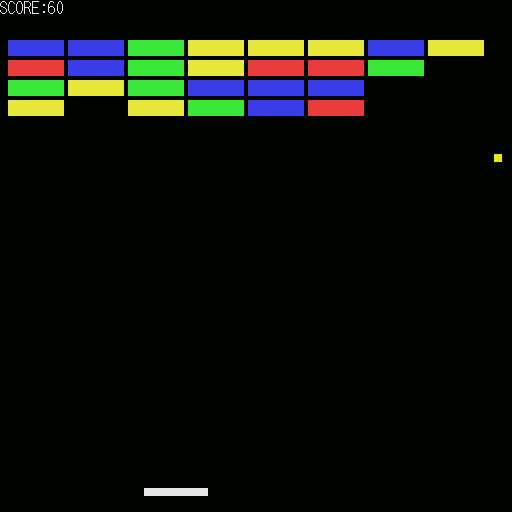
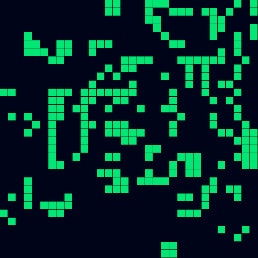

Sprout68k
ブラウザだけで、X68000 のプログラムを C で書いて、すぐ動かせる入門環境です。インストールも、アカウントも要りません。
Write C programs for the X68000 and run them right away — entirely in your browser. No install, no account.
はじめるStartインストールは要りませんNothing to install
C のコンパイラそのものがブラウザの中で動きます。ページを開けば、それだけで書き始められます。書いたものは自動でブラウザの中に保存され、次に開いたときも続きから始められます。
最初のビルドのときだけ、コンパイラ一式（約20MB）を読み込みます。2回目からは読み込み済みのものを使います。
The C compiler itself runs inside your browser. Open the page and you can start writing immediately. Your work is saved in the browser, so you can pick up where you left off.
Only the first build downloads the toolchain (about 20 MB). After that it is reused.
書いて、すぐ動かすWrite it, run it
書いたプログラムは、その場で X68000 の実行画面に出ます。エミュレータもページの中にあるので、ファイルを持ち運ぶ必要はありません。
Your program runs on an X68000 screen right there on the page. The emulator is built in, so there are no files to move around.
#include "x68.h"
void main(void) {
x68_screen_open();
x68_cls(x68_rgb(0, 0, 0));
x68_box_fill(200, 200, 100, 100, x68_rgb(255, 128, 0));
x68_screen_flip();
}
これだけで、画面にオレンジ色の四角が出ます。
That is all it takes to put an orange square on the screen.
入門者のための関数Functions made for beginners
覚える関数は29個だけです。点・線・四角・円を描く、キーを読む、文字を出す、乱数を引く——ゲームを作るのに要るものが揃っています。
範囲の外を指定しても落ちません。 画面からはみ出す座標を渡しても、そこだけ切り取られるだけです。入門者がいちばん転びやすいところを、ライブラリ側で受け止めています。
関数リファレンスには、29個すべてにそのまま動く例と「つまずきどころ」が付いています。
There are only 29 functions to learn: draw points, lines, boxes and circles; read the keyboard; print text; get random numbers — everything you need to make a game.
Out-of-range values never crash your program. Coordinates outside the screen are simply clipped. The library absorbs the mistakes beginners make most often.
The function reference gives every one of the 29 a runnable example and a list of common pitfalls.
エラーは、やさしい言葉でErrors in plain language
コンパイラのエラーは英語で、初めて見ると意味が分かりません。Sprout68k は、よく出るものに日本語の注釈を付けて「何が起きたか」「次に何をすればよいか」を並べて出します。
実行中にプログラムが壊れたときも、画面が固まるのではなく何が起きたかを表示して止まります。そこから1クリックでやり直せます。
Compiler errors are hard to read the first time. Sprout68k annotates the common ones with a plain-language note: what happened, and what to do next.
If your program crashes while running, the screen does not just freeze — it tells you what went wrong and stops, and you can start over with one click.
作例がついていますWorked examples included
1本ごとに覚えることが1つずつ増える作例が6本と、眺めて楽しい作品が2本入っています。どれも作例集から、解説付きで読めます。ボタン1つでエディタに開けるので、打ち込む必要はありません。
Six step-by-step examples — each adding exactly one new idea — plus two programs that are simply fun to watch. All of them are explained in the examples page and open in the editor with one click; no typing them in.




作ったものを、URLで配れますShare what you made — as a URL
遊んでもらうLet people play
受け取った人はリンクを開くだけで遊べます。コンパイラは要りません。ブロック崩しの大きさでも 1,000文字ほどで、SNS にそのまま貼れます。
Anyone who opens the link can play immediately — no compiler needed. Even a breakout-sized program fits in about 1,000 characters, short enough to post on social media.
読んで、直してもらうLet people read and remix
ソースそのものを載せたリンクも作れます。受け取った人はエディタで開いて、書き換えて、自分の作品として出し直せます。
You can also share a link that carries the source itself. The other person opens it in the editor, changes it, and shares their own version.
作品はどこにもアップロードされません。 URL の # より後ろはサーバーに送られない決まりになっているので、データは受け取った人のブラウザの中だけで開かれます。
実行画面はいつでも撮影できます。撮った画像は保存やコピーができるので、投稿に添えられます。
Your program is never uploaded anywhere. Everything after # in a URL is never sent to a server, so the data is only ever opened inside the recipient's browser.
You can take a screenshot of the running program at any time, then save or copy it to attach to your post.
オフラインでも使えますWorks offline
一度読み込めば、次からは通信が無くても書いて動かせます。コンパイラもエミュレータも手元にあるので、機内でも動きます。
Once loaded, it keeps working without a network connection. The compiler and the emulator are both on your device, so it runs on a plane too.
AI と一緒に作ることもできますBuild alongside an AI agent
MCP サーバーが付属しています。AI エージェントから、ビルドして・実際に動かして・画面を見て、というところまで行えます。手元で動くもので、書いたコードが外へ出ることはありません。
共有リンクを AI が作った場合は、「AIを使って作った」という印が必ず付きます。
An MCP server is included, so an AI agent can build your program, actually run it, and look at the resulting screen. It runs locally; your code does not leave your machine.
When an agent creates a share link, it is always tagged as AI-assisted.
中身のことUnder the hood
- 作ったプログラムは OS を使わず直接動きます。起動できるフロッピーディスクの形（.xdf）で書き出せるので、実機でも動かせます。
- エミュレータは px68k、コンパイラは GCC 13.4.0 の m68k 向けです。どちらもブラウザの中で動いています。
- 画面は 512×512 ドット・65536色。座標は左上が (0,0) です。
- Your program runs directly on the hardware, without an OS. It exports as a bootable floppy image (.xdf), so it runs on a real X68000 too.
- The emulator is px68k and the compiler is GCC 13.4.0 targeting m68k — both running in the browser.
- The screen is 512×512 pixels with 65,536 colours; (0,0) is the top-left corner.
ライセンスと出典License and credits
Sprout68k は GPL version 2 で配布しています。エミュレータ部分は px68k-libretro（GPLv2）、エディタは CodeMirror（MIT）です。文字の形は東雲フォント由来のものを自前で作り直して同梱しています。
詳しい表示はアプリ画面の下部にあります。
Sprout68k is distributed under GPL version 2. The emulator core is px68k-libretro (GPLv2) and the editor is CodeMirror (MIT). The character shapes are our own rebuild derived from the Shinonome font.
Full attributions are shown at the bottom of the app.